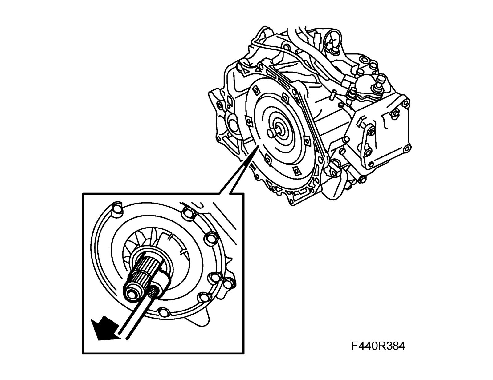
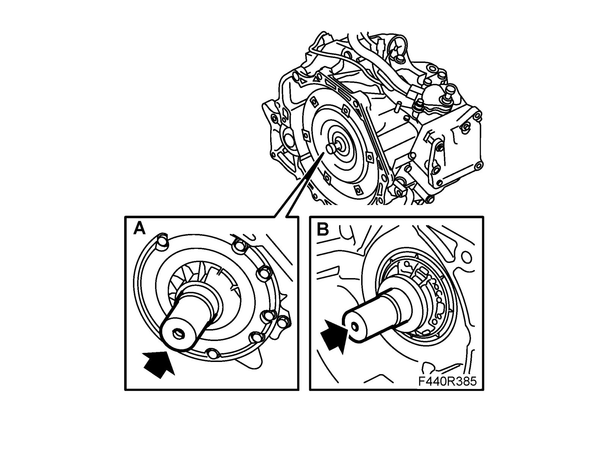

Torque Converter Seal
Torque converter sealTo remove
1. Remove the Torque converter.

2. Thread in 87 92 384 Puller, torque converter seal inside the seal and use 83 90 270 Sliding hammer to detach the seal.
To fit
1. Fit the new seal using 5 speed: 87 91 311 Socket, bearing driver shaft. (A) 6 speed: 87 91 311 Socket, bearing driver shaft and 87 90 982 Ring, pinion bearing. (B)

2. Fit the Torque converter.